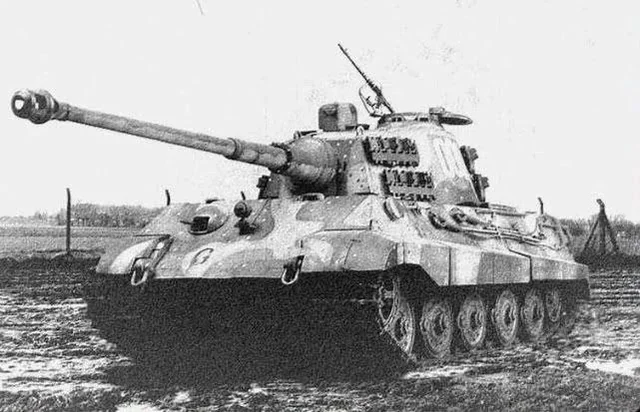

| Spesifikasi | Detail |
|---|---|
| Dimensi (Panjang dengan meriam ke depan) | 10,29 m |
| Dimensi (Panjang Badan Tank) | 7,62 m |
| Lebar | 3,76 m |
| Tinggi | 3,09 m |
| Berat | Sekitar 69,8 ton |
| Awak | 5 orang |
| Lapisan Baja (Depan Badan) | 150 mm (miring 50°) |
| Lapisan Baja (Sisi Badan) | 80 mm (miring 25°) |
| Lapisan Baja (Belakang Badan) | 80 mm (miring 30°) |
| Lapisan Baja (Depan Kubah) | 180 mm (melengkung) |
| Lapisan Baja (Mantel Meriam) | Hingga 190 mm |
| Persenjataan Utama | 1 x meriam tank 8,8 cm KwK 43 L/71 |
| Persenjataan Sekunder | 2 x senapan mesin 7,92 mm MG 34 |
| Mesin | V12 Maybach HL 230 P30 |
| Tenaga Mesin | 700 PS (690 hp, 515 kW) |
| Kecepatan Maksimum | 38 km/jam (di jalan) |
| Jarak Tempuh | Sekitar 170 km (di jalan) |
| Suspensi | Batang torsi |
| Produksi | Sekitar 492 unit |